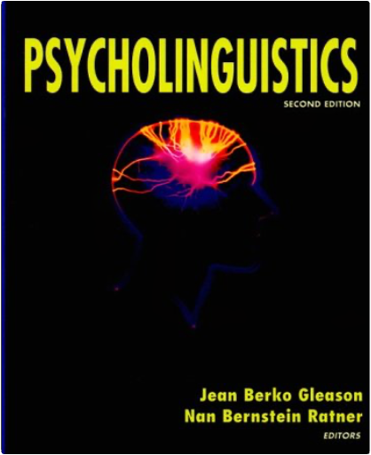

Vegetarian PastaValerie Ferguson Vegetarian PastaValerie Ferguson  Discover an exciting new world of ingredients that can be teamed with pasta and noodles with this tempting collection of more than 140 recipes.  The Feynman Lectures on Physics, The Definitive Edition Volume 2Richard P. Feynman, Robert B. Leighton, Matthew Sands The Feynman Lectures on Physics, The Definitive Edition Volume 2Richard P. Feynman, Robert B. Leighton, Matthew Sands This revised edition of Feynman’s legendary lectures includes extensive corrections Feynman and his colleagues received and Caltech approved, making this the definitive edition of The Feynman Lectures on Physics. For all readers interested in physics.  The Feynman Lectures on Physics, The Definitive Edition Volume 3Richard P. Feynman, Robert B. Leighton, Matthew Sands The Feynman Lectures on Physics, The Definitive Edition Volume 3Richard P. Feynman, Robert B. Leighton, Matthew Sands This revised edition of Feynman’s legendary lectures includes extensive corrections Feynman and his colleagues received and Caltech approved, making this the definitive edition of The Feynman Lectures on Physics. For all readers interested in physics.  The Feynman Lectures on Physics, Vol. 1: Mainly Mechanics, Radiation, and HeatRichard P. Feynman, Robert B. Leighton, Matthew Sands The Feynman Lectures on Physics, Vol. 1: Mainly Mechanics, Radiation, and HeatRichard P. Feynman, Robert B. Leighton, Matthew Sands This revised edition of Feynman’s legendary lectures includes extensive corrections Feynman and his colleagues received and Caltech approved, making this the definitive edition of The Feynman Lectures on Physics. For all readers interested in physics.  Feynman's Tips on Physics: A Problem-Solving Supplement to the Feynman Lectures on PhysicsRichard P. Feynman, Michael A. Gottlieb, Ralph Leighton Feynman's Tips on Physics: A Problem-Solving Supplement to the Feynman Lectures on PhysicsRichard P. Feynman, Michael A. Gottlieb, Ralph Leighton This new volume contains four previously unpublished lectures that Feynman gave to students preparing for exams. With characteristic flair, insight and humor, Feynman discusses topics students struggle with and offers valuable tips on solving physics problems. An illuminating memoir by Matthew Sands — who originally conceived The Feynman Lectures on Physics — gives a fascinating insight into the history of Feynman’s lecture series and the books that followed. This book is rounded off by relevant exercises and answers by R. B. Leighton and R. E. Vogt, originally developed to accompany the Lectures on Physics.  Hypnotism: A HistoryDerek Forrest Hypnotism: A HistoryDerek Forrest This work traces the history of hypnotism from its beginnings as "animal magnetism". It begins with a detailed description of Anton Mesmer's 1774 discovery and recounts the story of his life. The major alterations in Mesmer's theory made by a variety of early pioneers, including the supposed paranormal powers possessed by somnambulists, are then examined, with a fuller account of the tragedy of John Elliotson than has appeared elsewhere. James Braid's coining of the term "hypnotism" to replace "animal magnetism" introduces the modern era, and after an appreciation of Braid's work the dramatic demonstrations in Charcot's Clinic are described, with the subsequent exposure of his errors by Bernheim and others. The book concludes with an account of the therapeutic and experiment work of the 20th century and the practical ways in which hypnotism is being employed today. The Pan Dictionary of MathematicsCarol Gibson Explains over 1500 of the most important and commonly used mathematical terms - including those recently coined in fields such as computer graphics, artificial intelligence and robotics. Coverage is not confined to theoretical aspects of mathematics, and includes banking and cartography. PsycholinguisticsJean Berko Gleason, Nan Bernstein Ratner Designed for introductory undergraduate courses in psycholinguistics, this textbook is written in an easygoing manner which is neither too technical or intimidating to the beginning student. The text does not assume extensive background in linguistics, psychology or cognitive science, and includes all major extensions of the field. The collaborative authorship of eminent psycholinguists Berko Gleason and Bernstein Ratner assures the best possible coverage of these diverse topics. Features: * Chapter 2 has updated popular coverage of brain imaging and language processing. * Chapters 6 and 7 illustrate the dynamics of understanding language in context and the process of generating sentences. * The instructor's manual includes exercises, instructional activities, and handouts which demonstrate important material in the text. * The accompanying audio stimulus tape provides examples of difficult concepts such as speech intelligibility, categorical perception, click location and memory for words and sentences to encourage class participation. New to this edition: * Basic linguistic theory and terminology is covered more in detail and the research is thoroughly updated. * Chapter 6, Sentences Combined: Text and Discourse addresses a wider range of discourse processing, including mental models, text representation and memory, and connecting sentences in discourse. * Something to Think About questions stimulate students' critical thinking. * Each chapter contains mini-experiments designed to support students' grasp of material covered in the chapter.  Lord of the FliesWilliam Golding Lord of the FliesWilliam Golding This is the compelling story about a group of very ordinary small boys marooned on a coral island. At first it seems as though it is all going to be great fun; but the fun before long becomes furious and life on the island turns into a nightmare of panic and death. As ordinary standards of behaviour collapse, the whole world the boys know collapses with them - the world of cricket, homework and adventure stories - and another world is revealed beneath, primitive and terrible. |


 Made with Delicious Library
Made with Delicious LibrarySpringfield, State zipflap congrotus delicious library Doddridge, Edward